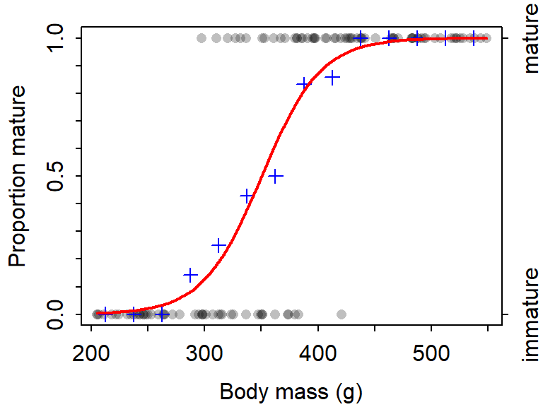

Note Your answers to the questions below should follow the expectations for homework found here. Due date is on the Dates page.
Todd et al. (2018; J. Mammalogy 99:1510-1521) examined the maturity of the endangered Flying Fox (Pteropus natalis) on Christmas Island. In one part of their study they recorded the body mass (g) and whether the individual was mature (or immature) of male Flying Fox. Their goal was to describe the relationship between the proportion of male Flying Fox that were mature and the body mass of the individual. Their results are shown in Figure 1, Table 1, and Table 2.

Figure 1: Fitted-line plot for the logistic regression describing the relationship between the proportion of male Flying Fox that are mature and body mass (g).
Table 1: Parameter estimates (and 95% confidence intervals) for the logistic regression describing the relationship between the proportion of male Flying Fox that are mature and body mass (g).
Ests 2.5 % 97.5 %
(Intercept) -13.45683731 -19.67010918 -8.97641782
mass 0.03842538 0.02586132 0.05588533Table 2: Summary of parameter estimates for the logistic regression describing the relationship between the proportion of male Flying Fox that are mature and body mass (g).
Estimate Std. Error z value Pr(>|z|)
(Intercept) -13.45683731 2.683602477 -5.014467 5.318055e-07
mass 0.03842538 0.007536373 5.098657 3.420720e-07Use this information to answer the questions below. [Do not yet be concerned with confidence intervals, but you will be on future exercises.]